Loading ...
Loading ...

Role: Product Manager and Web APP Developer
Industry: Non-Profit Organization
Tech Tool: Python Django
Project Length: 3-month development & up to date maintenance
Client: International Chinese Reading Association (ICRA)
Link: starBook Web APP Link
Besides carefully listening to my client, I worked with my client to envision the product from random ideas to a coherent application program with specific goals.
Main Challenges:
Strategy:
Deliverable: A project proposal details the project vision, project goal, implementation plan, potential risks, and communication plan.
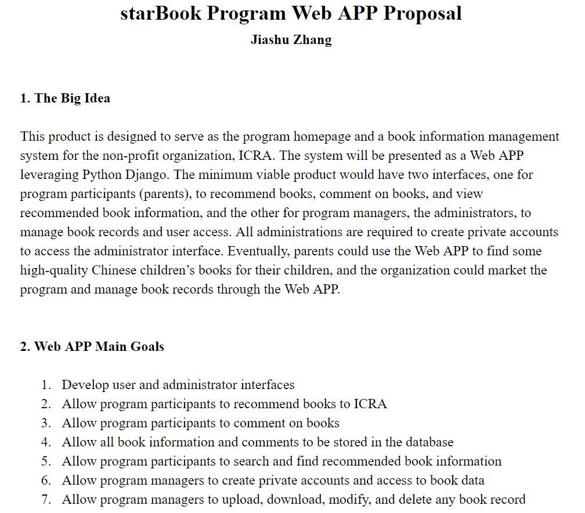The Web APP is designed for two types of users, program participating parents and program managers. Two basic personas are created below.
Lucy, 35 years old, a mother of two kids whose ages are 3 and 5. She wants to borrow or buy some Chinese children’s books for her kids but does not know which libraries to go to or what books are recommended. She participates in the starBook program and wants to get some related book information on the program Web APP. At the same time, she could also recommend any book to the program and comment on existing books.
Tim, 28 years old, an ICRA volunteer for the starBook program. He needs to use the program Web APP to manage the book collection list. He has his administration account and can upload, download, modify, and delete any book record in the administration interface.
Deliverable: A flowchart maps the book recommendation or comment process.
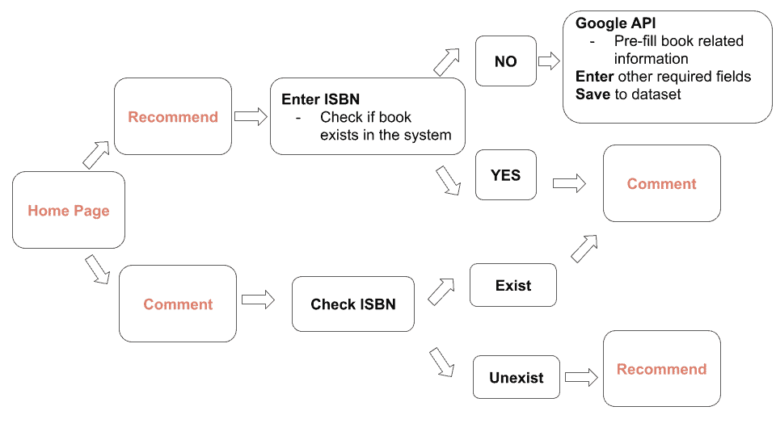To better visualize the Web APP and discuss the design with my client, I sketched main page wireframes and revised them during meetings.
Strategy: I sketched wireframes for my client to make instant changes during our conversations. Thus, we would not waste time making changes to fancy mockup tools.
Deliverable: Final sketch wireframes illustrate structures of the program home page and book collection page.
I applied the Agile methodology to better interact with my client and improve the project flexibility to changes.
Strategy:
Significant Improvement: Incorporated batch data import feature simplifies the data entry process for program managers.
Both internal testing and external feedback collection were implemented.
Internal Testing: The Web APP was firstly tested by program managers to test functionalities and fix bugs.
External Feedback Collection: The Web APP was then launched to collect user experience feedback from participating parents (public users).
Significant Improvement: Integrated Google Books API searches and auto-fills book information for parents, which reduces parents’ workload and encourages them to recommend books through Web APP.
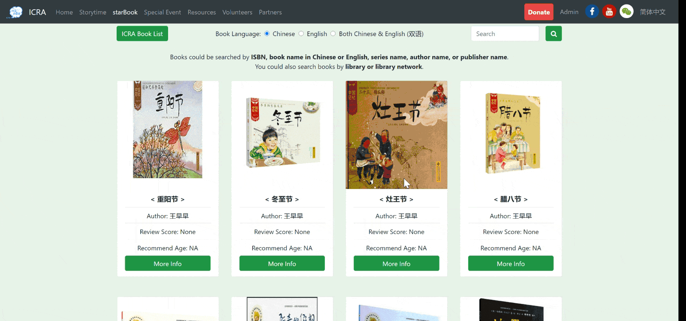As more feedback is collected, maintenance is scheduled every two months.
Thanks to the positive reaction from users, my client decided to expand the Web APP to be its organization website. I will be responsible for designing more features to continue providing valuable information to the target audience.

Role: Product Manager and Designer
Industry: Mental Health
Tech Tool: Balsamiq
Project Length: 1.5-month school project
Market Opportunity:
There are about 44 million people who struggle with mental illness every year in the US. That is, 1 in 6 people is having different levels of mental illness issues.
---- National Institute of Mental Health
Problems:
Mindpeace Solution:
A mobile APP allows people to relieve their stress by sharing thoughts and express concerns. The app will provide stress management resources and create a secure & private environment for people to mitigate anxiety.
Service:
Anonymous public forums
Stress management resources
Professional therapist assistance
Stress relief events
Target Users:
16 to 30-year-old students and young adults with stressful schedules
Sample Persona:
Name: Max
Age: 24
Journey Map:
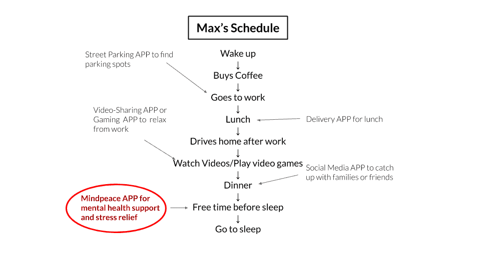Concept Pitch:
Five concept pitches are conducted with randomly selected target users.
Feedback & Improvements:
Competitor Research:
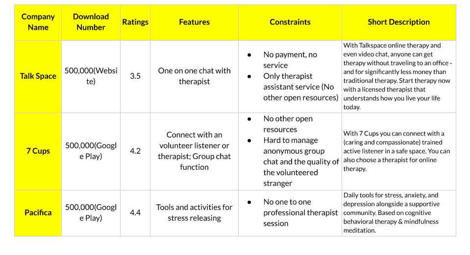Revenue Model:
Potential Regulatory Constraints:
Balsamiq Mockup:
Major UX Improvement:
Original Menu Design: Unless the menu icon is clicked, the menu bar would be hidden off the screen.
Feedback: The first round of testers reported that such a design made it hard to switch between different views.
Improvement: Four view tabs for home, forum, recreation, and therapy are added at the bottom of the screen for the convenient view switch.
Architecture: Cross-Platform
Operating System and Store: Considering the development cost, the APP will only be available on the Apple Store (iOS) at the first stage.
Development Plan:
Marketing Strategies:
Growth Projection:
Projected Market Size
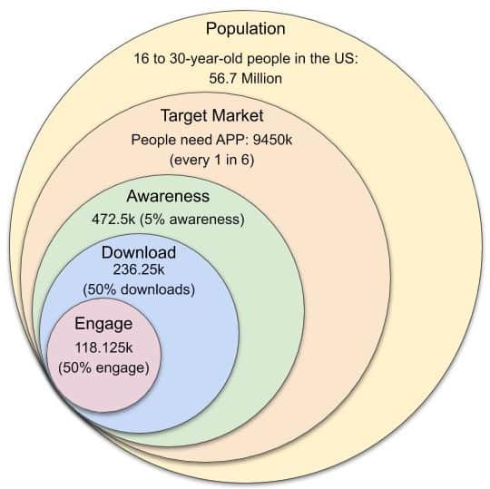Projected Income Statement
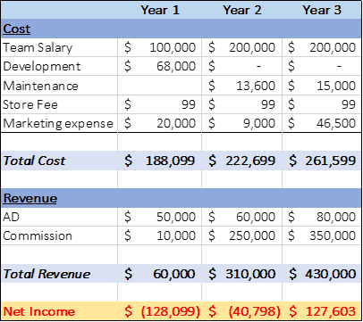
Role: Lean Operations Consultant
Industry: Aerospace
Project Length: 2.5 months
Client: A top aerospace manufacturer in India
The Problem:
The lack of operations data & information makes the director disconnected from the company, which leads to other manufacturing issues.
The goal is to bridge the gap so that upper-managers could manage the company with real-time information.
Break Down the Problem:
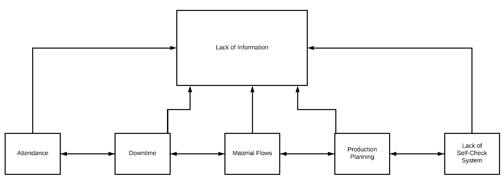
Narrowed-Down Root Causes (red circles in the chart below):
Significant Breakthrough:
At first, managers kept telling us there was no data and report available for him to review, so we designed customized sheets to track data and generate reports.
However, we were still getting pushback from machine operators who were responsible for data entry.
After interviewing machine operators and conducting anomalous surveys, we realized that there was only one computer on the whole manufacturing floor. Thus, whenever operators need to input data, they need to walk across the entire factory. This complicated process discourages operators from recording valuable data for the upper-management.
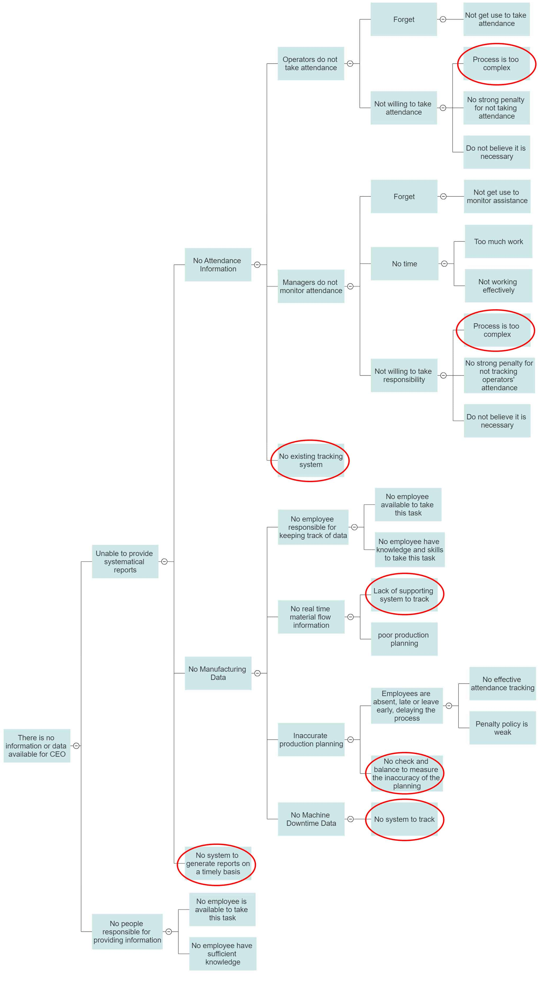Material and Information Flow Chart (MIFC) was crafted to understand the manufacturing process and support the design of data-tracking sheets.
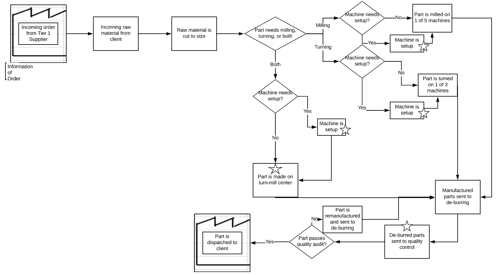Implementation Process:
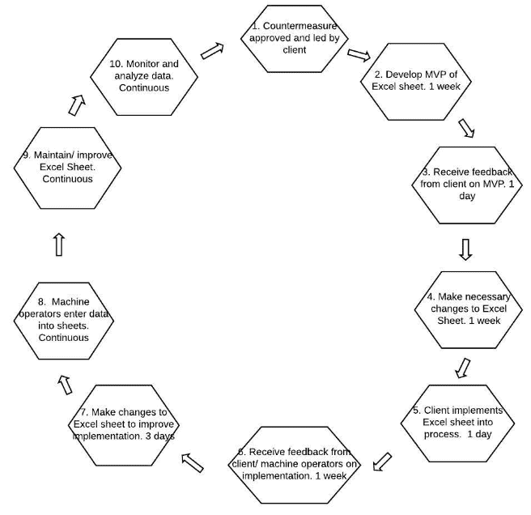Implementation Results:
For data-tracking sheets design:
ERP system research:
Results Achieved
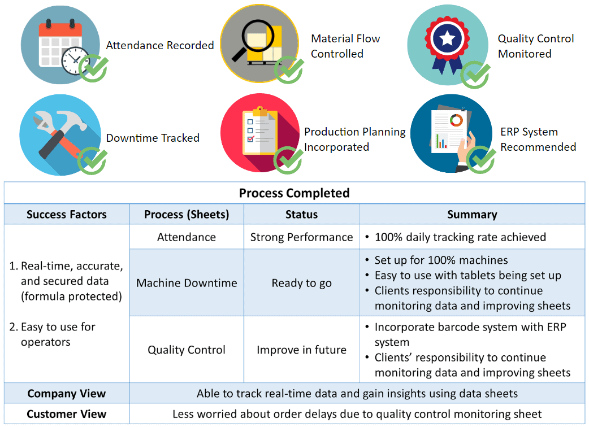Standardize Successful Processes
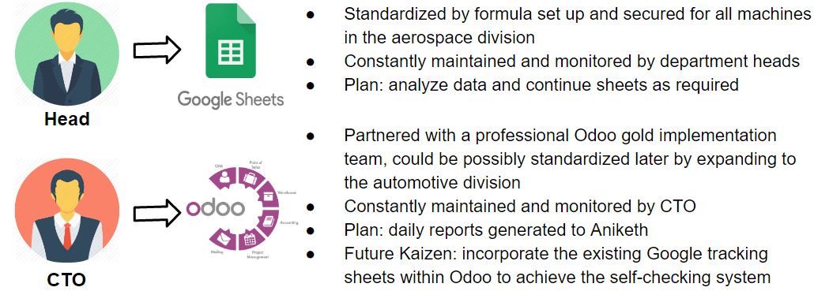
Role: Social Media Manager
Industry: Food Retail
Tech Tool: NUVI social listening
Project Length: 1-month school project
The Problem:
The lack of operations data & information makes the director disconnected from the company, which leads to other manufacturing issues.
The goal is to bridge the gap so that upper-managers could manage the company with real-time information.
Break Down the Problem:
Narrowed-Down Root Causes (red circles in the chart below):
Significant Breakthrough:
At first, managers kept telling us there was no data and report available for him to review, so we designed customized sheets to track data and generate reports.
However, we were still getting pushback from machine operators who were responsible for data entry.
After interviewing machine operators and conducting anomalous surveys, we realized that there was only one computer on the whole manufacturing floor. Thus, whenever operators need to input data, they need to walk across the entire factory. This complicated process discourages operators from recording valuable data for the upper-management.
Material and Information Flow Chart (MIFC) was crafted to understand the manufacturing process and support the design of data-tracking sheets.
Implementation Process:
Implementation Results:
For data-tracking sheets design:
ERP system research: